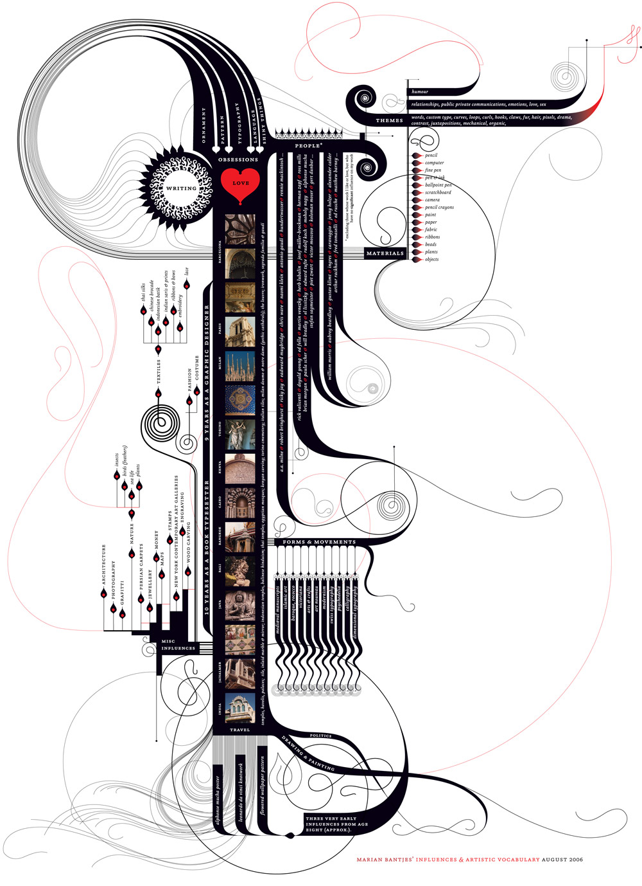

Bantjes has cited the Art Nouveau movement as a significant influence on her work. The movement's emphasis on intricate, organic, and ornamental designs is reflected in her detailed and decorative typographic pieces. Her interest in calligraphy and hand-lettering techniques has influenced her unique approach to typography, creating a more organic and personalized feel in her designs. As a designer who emerged during the digital age, her work also reflects the influence of technology on design. She often blends traditional and digital techniques, creating a balance between the handcrafted and the digital. Bantjes has been influenced by experimental typography and type designers who push the boundaries of traditional typography. This influence is evident in her innovative approach to letterforms and fonts. Below is actually an artwork by her that she made of all of her significant artistic influences, styles of working, and materials. It was created as an assignment to a design class with Milton Glaser in August 2006. It became one of her most iconic pieces.
